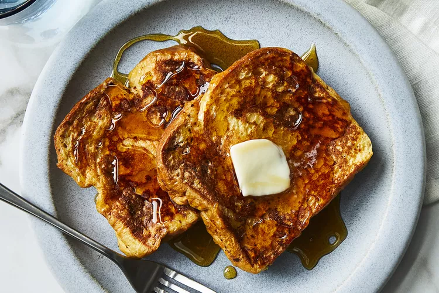

French Toast!

Decription
A simple french toast recipe that anyone can follow!
Ingredients
- 6 slices of white bread
- 2 eggs
- 2/3 cup of milk
- 1 teaspoon of vanillla
- 1/4 teaspoon of cinamon
- Salt to taste
- 1 tablespoon of unsalted butter
Steps
- Whisk milk, eggs, vanilla, cinnamon, and salt together in a shallow bowl.
- Lightly butter a griddle and heat over medium-high heat.
- Dunk bread in the egg mixture, soaking both sides.
Transfer to the hot skillet and cook until golden, 3 to 4 minutes per side. Serve hot.